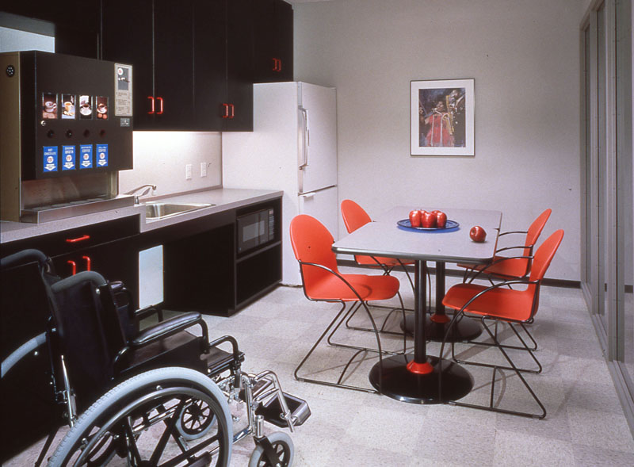
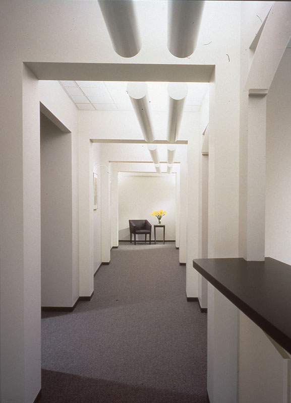
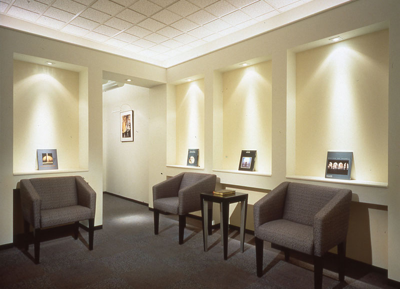
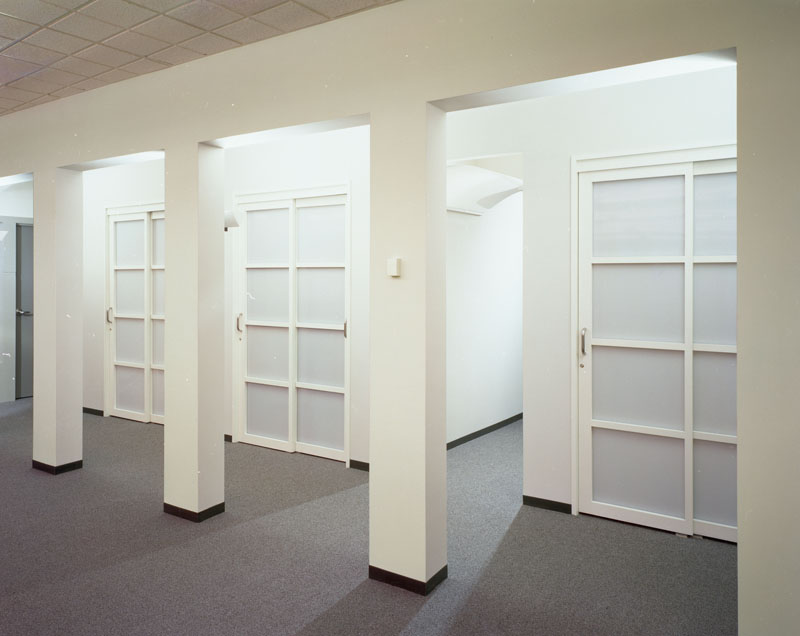
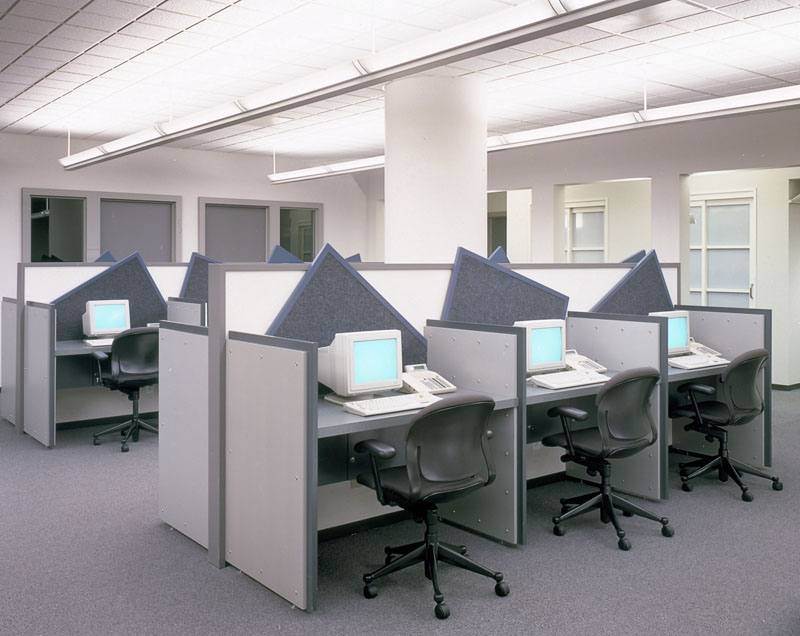

<!-- Project Template -->
<div class="container-fluid project-modal-window">
    <div class="row">
        <div class="col-sm-12 ">
            <div class="img-head" style="background-image: url('img/portfolio/commercial/chicago/chicago-space-planning-interior-design-accessible-break-room.jpg');">

            </div>
        </div>
        <div class="col-sm-7">
            <div class="modal-pad">
                <h2>Chicago TLLI Office Space Planning and Interiors</h2>
                <h5>Interior Design & Space Planning</h5>
                <strong>The Challenge:</strong>
                <p>
                  This Fortune 500 company needed to expand their telemarketing program nationally.
                </p>
                <strong>The Solution:</strong>
                <p>
                  We developed a specialized telemarketing Office Standards Program that outlined the function, adjacency, furnishings, mechanical, electrical and data requirements for each space. This was used to analyze and review multiple sites for their suitability to the client’s program. Continuing a 15-year relationship with this client we designed new offices in Virginia, Chicago and San Francisco.
                </p>
                <p>
                After a review of numerous possible lease spaces, we recommended the selection of this site in a landmark Chicago office building. The telemarketing office design was created to provide an upscale environment unique to the needs of this multi-time zone operation. Prominent product display was used to familiarize employees in the history of the company and in training on the various series created by the company. Custom work stations with integrated noise reduction, indirect lighting and views to the outside that provide visual breaks help keep staff focused on sales. The redesign of this office helped increase sales volume by over 30% over the previous location.
                </p>

            </div>
        </div>
        <div class="col-sm-5 modal-pad">
            <div class="modal-pad port-img-overflow">







            </div>
        </div>


        </div>

    </div>
